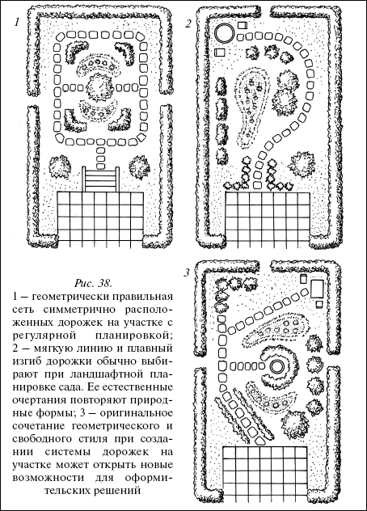
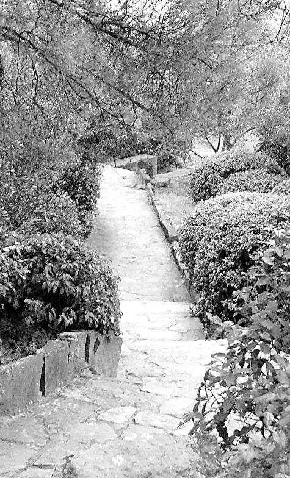
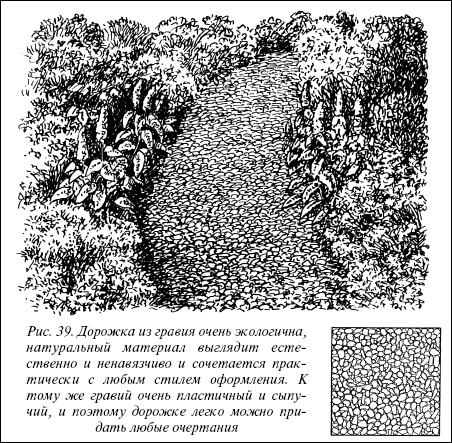

Дорожки.

Дорожки на участке выполняют прежде всего практическую функцию соединения всех его частей, а также являются важным элементом оформления участка и создания общей композиции. Правильная и красивая планировка дорожек – важная составляющая благоустройства и декоративного решения пространства сада. Дорожки разделяют, разграничивают участок на отдельные зоны, но одновременно и связывают их воедино, объединяют в будущую композицию.
Совет
Своеобразие композиции может быть достигнуто сочетанием строгого и свободного стилей размещения дорожек на участке.
Дорожки должны быть удобными для передвижения по ним, не требовать серьезного ухода и к тому же соответствовать по своему характеру окружающей среде. Для двух человек, идущих рядом, ширина дорожки должна составлять 1,2–1,5 м, для одного человека достаточно будет 60–75 см. Для того, чтобы дорожку гармонично связать с садовым окружением, имеется множество оформительских средств и материалов.
Основы строительства садовых дорожекНеобходимо учесть
Дорожек не должно быть слишком много, особенно на площади небольшого участка. Иначе разветвленная сеть дорожек вызывает дробность пространства и неизбежное при этом ощущение внутреннего беспокойства.
Начинать работы нужно с разметки дорожек. Прямые участки размечают с помощью шнура с колышками на концах, изогнутые – тем же шнуром с колышками, применяя один из них в качестве центра, а другой – как вторую ножку циркуля.

Рис. 38.
1 – геометрически правильная сеть симметрично расположенных дорожек на участке с регулярной планировкой; 2 – мягкую линию и плавный изгиб дорожки обычно выбирают при ландшафтной планировке сада. Ее естественные очертания повторяют природные формы; 3 – оригинальное сочетание геометрического и свободного стиля при создании системы дорожек на участке может открыть новые возможности для оформительских решений
Меняя длину шнура и месторасположение центра, таким простейшим циркулем легко вычертить на земле плавные кривые. Фиксируют линии на земле маленькими колышками. Вдоль них натягивают шнур, обозначающий края дорожки.

Перед строительством дорожек с покрытием нужно подготовить так называемое ложе, в которое будет уложено покрытие. Для этого по линиям разметки вдоль натянутого шнура штыком лопаты подрезают на глубину 15–20 см и снимают дерн, выбирают грунт. Дно ложа должно иметь по центру возвышение в 2–3 см, необходимое для стока воды с центра дорожки к краям. Дно ложа тщательно утрамбовывают подручным инструментом, ручным катком или электрическим утрамбовщиком.

Рис. 39. Дорожка из гравия очень экологична, натуральный материал выглядит естественно и ненавязчиво и сочетается практически с любым стилем оформления. К тому же гравий очень пластичный и сыпучий, и поэтому дорожке легко можно придать любые очертания
Дорожки и площадки должны иметь соответствующий уклон как по длине, так и поперек для стока дождевых и талых вод. Направления наклона зависят от рельефа участка и его планировки, но наклон должен всегда отводить воду от построек. Делают его небольшим, что облегчает ходьбу и предохраняет дорожки и площадки от размыва ливневыми водами.
На дне ложа точно по центральной оси необходимо создать возвышение, называемое водоразделом, чтобы задать некоторый поперечный уклон дорожке. Для этого слой земли снимают и подсыпают холмиком к центру ложа. Независимо от типа покрытия необходимо выдерживать профиль ложа – выпуклую середину.
В зависимости от типа почвы и характера выбранного для дорожки покрытия в ложе укладывают фундамент, а сверху – покрытие.
Независимо от количества слоев основания дорожки каждый из них должен сохранять заданный профиль ложа – выпуклую середину и покатые края.
Строительство проездов, дорожек, площадок начинают после окончательного формирования рельефа участка и после того, как участки, через которые проходит дорожка, достаточно осели.